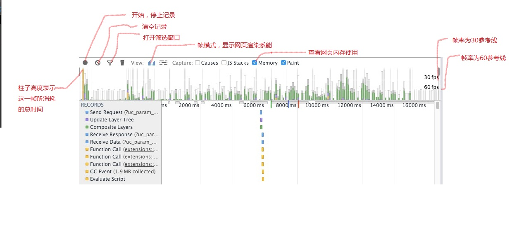
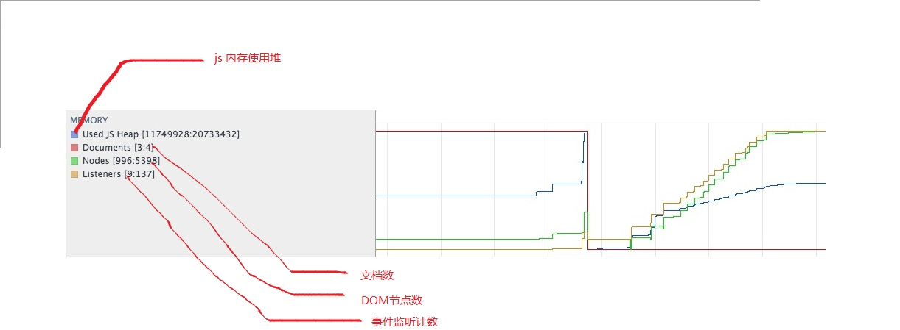
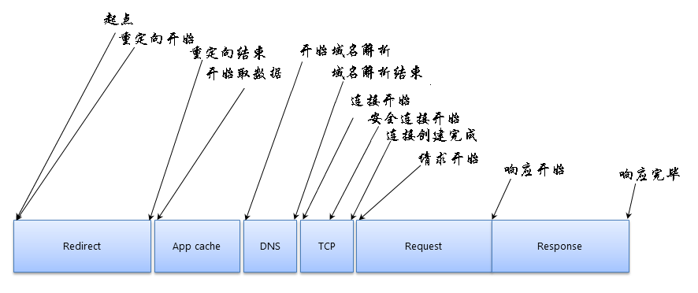
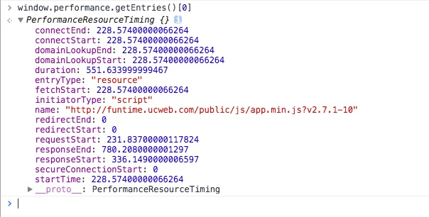
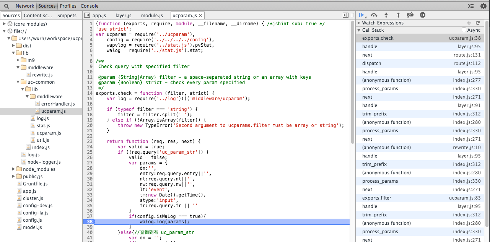

Rahul Wu
吴荣华（子纲）
大导航
GitHub @wurh
blog wurh.github.io
本次分享主要是针对前端性能优化上使用到的工具分析进行分享与讨论
1、前端方面的性能调优
2、网络上的性能调优
3、服务端上的性能调优(Node.js)
2.性能分析Timeline

1、页面的每一帧内容都是GPU绘制出来的,它的最高绘制频率受限于显示器的刷新频率,大多数情况下最高的绘制平率只能是每秒60帧(frames per second,
即fps),对应于显示器的60Hz.因此在页面性能的测试中, 60fps是一个非常重要的指标,越接近越好.
2、如果出现偏向于30fps，就说明GPU渲染画面频率降低，出现掉帧
内存视图会通过一个图表显示您的页面随着时间的推移所使用的内存，你可以查看每个时间段的内存使用量，并找出性能问题

性能优化的首要准则：避免持续引用太多DOM元素，注销掉过期的事件监听器，不要用全局变量存储你不需要的数据！
Shallow Size
对象自身占用的内存大小，不包括它引用的对象。
Retained Size
该对象被GC之后所能回收到内存的总和
不过，释放的时候还要排除被GC Roots直接或间接引用的对象.
JavaScript对象JS中有三种基础类型：
1、Numbers
2、Booleans
3、Strings
Numbers会以下面两种方式来存储:
1、small integers（SMIs）：31位内的整数值
2、heap numbers：超过SMI表大小的值，例如doubles
Strings也会对应两种存储方案:
1、VM heap
2、非VM heap
1、一个JS对象会从JS的堆内存（VM heap）中申请自己所需要的内存，而V8的垃圾回收器会在该对象不在活跃（没有任何对它的强引用后）后回收内存。
2、本地对象（Native objects）代表那些不在JS堆内存中的对象集合，它不受控于V8的垃圾回收机制~
1、哪个资源响应（得到第一个数据包）最慢；
2、哪个资源加载耗时最久；
3、谁发起了一个网络请求；
4、获取一个后端数据的各个网络阶段的耗时情况。
1.chrome dev tool网络监控与调优Network
Network网络面板是基于Resource Timing API来获取每个请求的耗时细节的
API提供面向一次HTTP请求所收集的各个时刻点的数据

在chorme中，我们也可以通过window.perfomance.getEntries()来查看请求耗时数据

2.Fiddler 与 Charles 网络代理工具进行调优
npm install node-inspector -g 进行安装
node —debug-brk app.js
启动node-inspector
展开如chrome dev tool的debug页面

Node Profiler 是什么？
1、Node Profiler是一款JavaScript的性能调优工具
2、它不仅知道您的哪些代码慢，还知道为什么慢，能更深度地洞悉性能问题所在
V8 引擎
1、V8是一个Javascript 语言的执行引擎
2、V8是JIT的方式执行Javascript代码，JS直接编译成机器码然后执行
3、V8对Javascript的处理是以函数为单位
1、一个普通的编译器：FullCompiler
2、一个优化编译器：Optiomizing Compiler
3、运行时优化；
1、DONT_OPTIMIZE_NODE
2、Bailot
3、逆优化 - deoptimiztion；
安装 Node-profiler
地址:http://alinode.aliyun.com/
使用node-profiler 启动server
注意事项：
1、Node Profiler 仅对Node(v8)有效
2、Node Profiler 仅对CPU层面做优化分析，系统性能跟很多其他因素相关
3、只能用于开发环境，不能用于生产环境
当然这仅仅只是调试优化的小小一部分
如果我们想更深刻的了解我们的站点应用性能情况，建议...
a、接入UAE 应用,利用uae 发现功能 跟踪站点服务健康情况
b、接入WA 应用，对性能数据和错误信息进行打点统计
c、接入UCMT 进行站点监控，如有异常可进行报警